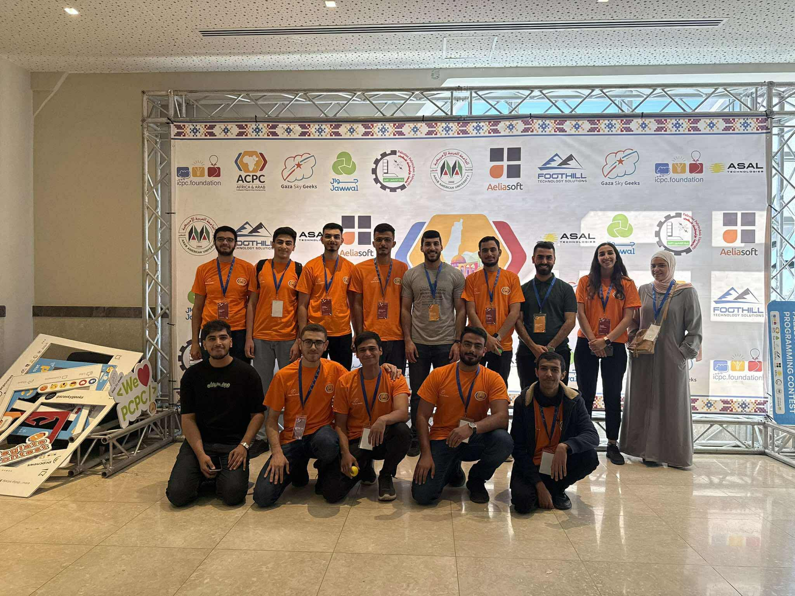

عثمان غالب عثمان كتوت, طالب هندسة حاسوب في جامعة بيرزيت في السنة الرابعة, لديه شغف في تعلم اشياء جديدة, فعلى سبيل المثال يقوم حاليا عثمان بتعلم سبل وطرق تطوير الويب, حيث انه قد بدا بتعلم الفرونت اند مع كوتش رائعة جدا وهي الكوتش منار. بس يا ترى كيف بلشت قصته ؟

التوجيهي كان اول تحدي في حياته, كان داخل عليه وهو خايف ومتوتر, خايف انه يَفَشَّل الناس الي بحبوه, خايف انه يخسر ثقته في نفسه, كان يشوف ناس بتحكي انا درست وما جبت وهاد الاشي كان عامله قلق كبير وخوف, هاد الخوف كان يخلي عثمان يدرس اكثر, تخيلوا انه حل فوق ال 1000 سؤال رياضيات خلال السنه,اضطر عثمان للاعتماد على التعليم الذاتي بعد ما اضربواالاساتذة لمدة فصل كامل, وقتها صار عثمان يدرس من الدوسيات و الكتب لحاله بعد كل هاد وصل عثمان بنهاية السنة لحالة تسمى بالاحتراق النفسي وهي حاله بكون ما في طعم فيها للحياة, وبتنتج عن الضغط المتواصل والتعب الشديد لفترات طويلة, بس كان مضطر انه يكمل ويتحدى هاد الاشي, و الحمد لله الله اعانه عليه ومشت الايام وانتهت مرحلة التوجيهي الحمد لله بنجاح, فرح فيه امه و ابوه, وما كان هاد النجاح ليحدث لولا توفيق رب العالمين وفضله على عثمان.

الجامعة تقريبا اهم مرحلة في حياة الانسان, لانه هي المرحلة الي بتصنعك, فيها بتبلش تشوف الحياة وتفهم كيف ماشية, فيها بكون عندك مجال تجرب اشياء جديدة وتتعلم منها دروس وعبر مفيدة جدا في حياتك. ببدا الاشي من اختيار التخصص, عثمان اختار تخصص هندسة الحاسوب لانه مهتم بالتكنولوجيا وبالبرمجة, مع انه الكل حرفيا الكل كان يحكيله ادخل طب او طب اسنان و اهله كانوا يقنعوا فيه انه يدخل صيدلة, الا انه هو كان مصمم على هاد التخصص, وبالفعل بلش عثمان رحلة الجامعة في هاد التخصص, في اول فصل اله بعد الدوام باسبوع واحد مش اكثر بلشت حرب غزة وتحول التعليم عن بعد, والي هو اسؤا انواع التعليم خصوصا لطلاب الاي تي, لانه باختصار الدكاترة بحطوا اسئلة تعجيزة خوفا من غش الطلاب. خلص اول فصل وما كان عثمان راضي عن علامته, لانه عارف انه عنده قدرة يكون احسن من هيك, ف حط في راسه انه الفصل الجاي لازم يكون احسن.
اجى الفصل الي بعده, وحط عثمان خطة يمشي عليها عشان يكون افضل ومشي عليها بالحرف, وفي اخر الفصل قدر يجيب عثمان اول انر اله وكان كثير فرحان في هاد الانجاز, كان فرحان من انه قدر يحط خطة ويمشي عليها صح, لانه هاد كان اثبات اله انه بقدر يعمل اشياء اكبر في حياته وهاد كان اكبر مكسب اله في حياته لحد الان(ثقته في انه اذا حط في راسه اشي ومع توفيق الله بقدر يعمله).
بعد هيك تعرف عثمان على مجال البروبلم سولفنج وبلش يتدرب كل يوم تقريبا خلال الصيف على هاي المهاره يتدرب ليل ونهار ويحل اسئلة برى نطاق الراحة تاعه, والنتيجة انه قدر يتاهل لاكبر مسابقة برمجة على مستوى فلسطين والحمد لله.
كمل عثمان في الجامعة وحاليا هو طالع على السنه الرابعة اله وبتامل انه يحقق انجازات اكثر, و واثق بتوفيق الله.